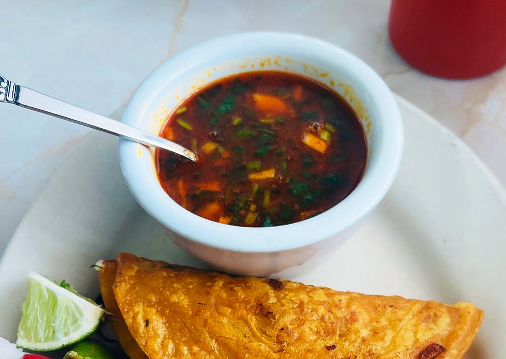

El Toro Bravo Omelette
$20.50Strong like a Oaxacan bull. Tender steak, peppers, onion and melted jack folded into a fluffy omelette, with home fries and a warm tortilla.
Breakfast 8am to noonLunch & dinner until 9pmHappy hour 3 to 5pm
Order Online
Strong like a Oaxacan bull. Tender steak, peppers, onion and melted jack folded into a fluffy omelette, with home fries and a warm tortilla.
No meat, nada, and you won't miss it. Egg whites with black beans, cactus, peppers and jack, topped with fresh avocado. Home fries on the side.
A burrito so big it needs two salsas. Home fries, peppers, bacon, ham and chorizo, smothered half green and half red, with melted cheese, crema, guac, pico and an egg on the side.
Mountain fuel. Three scrambled eggs, crispy home fries and melted jack wrapped tight with red or green tomatillo salsa.
Add bacon, ham or chorizo +$3.50 · smother with enchilada or ranchero sauce +$4.50
Eggs your way over a flour tortilla with pinto beans, ranchero sauce, guacamole, crema and pico.
Chips tossed in our house green or red sauce with two eggs your way, queso fresco, crema and red onion. Better than coffee for waking up.
Add steak +$7
Two eggs any style, home fries and a warm tortilla, with red, tomatillo or our hot Oaxaca salsa. Brave? Go Oaxaca.
Three eggs scrambled with chorizo, topped with jack and pico, with home fries and warm corn tortillas.
Three corn tortillas with fluffy scrambled eggs, melted jack and pico. Small tacos, big smile.

Crunchy chips under warm poblano queso, melted jack, black beans, roasted corn and pickled jalapeño, topped with guacamole, crema and pico. Bring friends.
Add diced chicken, pork pastor or veggie +$7 · steak asada or birria +$8
Our buffalo honey-garlic wings. Sweet, sticky and tangy, with a little habanero kiss at the end. Celery and ranch or blue cheese.
Three homemade dips for the table: poblano queso, fresh guacamole, and red salsa (spicy) or green tomatillo (mild).
Hot, creamy poblano queso with chorizo and corn, topped with pico and cotija. With chips or a warm tortilla.
Rolled tight and fried golden. Shredded chicken and jack, topped with guacamole, green sauce, crema, lettuce and pico.
Three crunchy tostadas with shrimp, lettuce, queso fresco and avocado sauce, with red or green salsa. Shrimp $22.50, or go campechano for $26.50.
A 13-inch flour tortilla full of melted jack, crispy outside and stretchy inside. Crema and pico on the side.
Add diced chicken, pork pastor or veggie +$7 · steak asada or birria +$8
Fries loaded with steak asada, poblano queso, jack, guac, crema and pico. Grab a fork and a friend.
Street corn on the cob with mayo, cotija, lime, tajín and cilantro. Messy hands, happy face.
Yes, cactus. Nopal strips battered and fried golden, with buffalo ranch.
Add grilled chicken to any salad +$7 · steak asada or blackened shrimp +$8
Fresh greens, peppers, tomato and radish with ranch, blue cheese or buffalo ranch.
Romaine, creamy Caesar, tortilla chips, roasted corn and cotija.
A salad that eats like a meal. Blackened chicken, black beans, corn, peppers, onion, tomato, jack and avocado in creamy tomatillo ranch.
Tender beef in a deep red chile broth with cilantro, onion and warm tortillas. Medicine for a cold Breck day.
Tomato-chile broth with crispy tortilla strips, avocado, cheese and cilantro.
Slow-cooked until the beef falls apart. Crispy, cheesy, chile-red tacos with a cup of rich consommé for dipping.
Marinated skirt steak grilled with a good char, with grilled onion, pickled habanero peppers, rice, beans and warm tortillas.
Carne asada, chicken drumstick and pork cecina with queso fresco, grilled onion and nopal, plus guac, salsa, beans, rice, pickled habanero peppers and chiles curtidos. Single $26, feeds three $79.
Shrimp and octopus with carne asada, chicken drumstick and pork cecina, queso fresco, grilled onion, nopal, guac, salsa, rice and beans. Single $31.50, feeds three $89.
Chicken, pastor and shrimp sizzled with bacon, ham, peppers and onion under melted quesillo. Build your own tacos with avocado sauce and red or green salsa.
Skirt steak simmered with peppers, onions and tomatoes in our ranchero sauce, with rice and beans.
Fall-apart birria over rice with pinto beans, jack, guac, cilantro, onion and lime. Veggie option: grilled mixed veggies.
Corn tortillas rolled with chicken and jack, smothered in red enchilada sauce or creamy queso poblano, with rice and beans.
Shrimp in our house Clamato blend with Maggi, a splash of Valentina, fresh avocado and pico. Served cold, with crackers.
Shrimp, clam and octopus in our cold house blend with crisp cucumber.
The pride of Oaxaca, as wide as your table. A giant crispy tortilla with asiento, black beans, melted quesillo, lettuce and avocado sauce. Cecina $27.50, steak asada $28.50.
Hand-made masa shaped like a sandal, crispy outside and soft inside, topped with black beans, queso fresco and asada, cecina, pastor or veggies.
Smoky drumsticks off the grill with golden fried onions and a blistered jalapeño, Mexican rice, refried beans and pico.
Every burrito: pinto beans, Spanish rice, jack, onion and cilantro in a 13-inch flour tortilla, with salsa roja, tomatillo or Oaxaca picante. Every torta: lettuce, quesillo, tomato, pickled jalapeño, avocado, mayo and black beans.
Grilled chicken, grilled veggies or pork pastor, packed tight.
Chargrilled steak asada or fall-apart birria. Ask for it smothered.
Smother it: enchilada or ranchero sauce with crema and avocado sauce +$4.50 · queso poblano +$6
Mexico's favorite sandwich, piled high. Pastor, chicken or veggies $18.50, asada or birria $20.50.
Chicken milanesa, chorizo eggs, ham and quesillo, stacked with all the fixings. Two hands. Maybe three.
Chicken breast pounded thin and fried golden, with the full stack of toppings.
Thin-sliced cecina, marinated and grilled, with quesillo, avocado, jalapeño, tomato, lettuce and black beans.
Grilled pineapple and ham with quesillo, buffalo ranch, avocado and jalapeño. Sweet, spicy, a little bit crazy.
Street style: diced white onion, cilantro and your salsa.
Hot off the grill. One is never enough.
Roasted corn, peppers, nopal and onion, grilled until sweet and a little charred.
Chargrilled steak asada or fall-apart birria. The kings of the taco.
Crispy fish or golden shrimp with cabbage, pico, chipotle mayo and queso fresco. Fish $7.50, shrimp $9.50.
The famous ones from our reviews. Fried to order with a melty salted-caramel center, piled with caramel ice cream, whipped cream, condensed milk and a cherry.
Churros solo $7
Crunchy fried ice cream and two churros with caramel, whipped cream and a cherry. Save room.
Fried ice cream solo $7
Chicken or steak asada with rice and beans.
Sides: Spanish rice $3.50 · refried or pinto beans (vegan) $3.50 · pickled habanero mixed peppers $5.50 · side fries $6

Every drink comes with your choice of salt, gusano salt, tajín or chamoy rim.
Conquistador Silver tequila, lime and organic agave. 12 oz $11 or go big with the 20 oz for $16.
Make it strawberry or mango: 12 oz +$2 · 20 oz +$4
A 20 oz glass for the boss. Tequila, fresh lime, a splash of OJ and agave.
Served in a real clay jarrito. Fresh lime and OJ topped with grapefruit soda and a tajín rim.
Our spicy one. House tequila infused with smoked cactus and jalapeño, with dragon fruit, lime and a splash of OJ.
Ask for the mocktail version
Vodka muddled with fresh mint, strawberries and jalapeño, with strawberry purée, lime and club soda.
The everyday drink of Mexico. Tequila, fresh lime and grapefruit soda.
Patrón Silver, lime and agave with a sal de gusano rim.
Rum, coconut cream and pineapple, blended smooth and icy.

All our food is fresh and made to order. Call ahead for takeout, pull up a chair, or ask us to cater your next event.
Please tell your server about any allergies. Parties of 6 or more have a 20% service charge, which supports our service team and is not a gratuity. We split checks up to 2 ways.